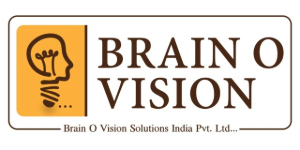
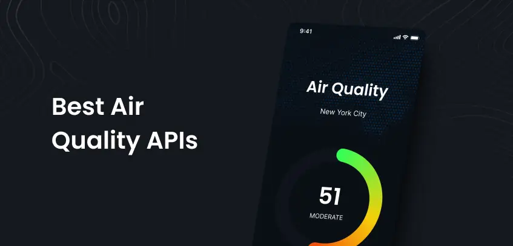
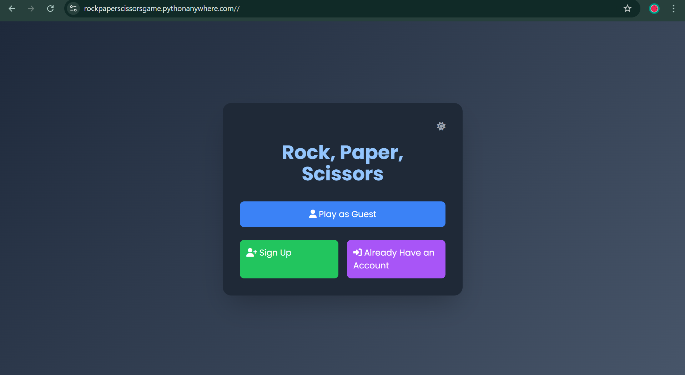

Hello, my name is
Shreya Surakanti.
I build things for AI.
Passionate AI/ML Engineer skilled in building production-ready NLP and Generative AI systems using TensorFlow, PyTorch, and MLOps practices, committed to creating accessible, human-centered solutions with strong focus on model reliability, bias mitigation, and scalability.
View My ResumeAbout Me
I'm an AI/ML Engineer and recent Data Science graduate passionate about building accessible, human-centered AI solutions. With strong expertise in end-to-end machine learning pipelines, NLP, Generative AI, and LLMs, I focus on developing reliable, scalable, and bias-aware intelligent systems. My work spans predictive analytics, intelligent document processing, and automated validation frameworks — always with emphasis on responsible AI and production readiness. Let's collaborate to innovate!
“AI is not about replacing people, but augmenting them.” – Satya NadellaSee Experience
3+
Internships
10+
AI Technologies
5+
Projects
3+
Core Domains
Education
UNIVERSITY OF CENTRAL MISSOURI, WARRENSBURG, MO
Program:Ms in Data Science and Artifical Intelligence
Years: 2024 - 2025
VIGNAN INSTITUTE OF TECHNOLOGY AND SCIENCE , HYDERABAD, INDIA
Program: Computer Science and Engineering
Specialization: Artificial Intelligence and Machine Learning
Years: 2020 - 2024
Work Experience

Python Full Stack Developer
AICTE - EduSkills Internship
VirtualNov 2021 - Feb 2022
- Completed a 10-week intensive internship focused on Python Full Stack development.
- Gained hands-on experience in building and deploying web applications.
- Successfully developed projects, demonstrating proficiency in both frontend and backend technologies.

Data Science Intern
Brain O Vision
VirtualJuly 2023 - Dec 2024
- Built NLP/LLM pipelines reducing manual review effort by 30%
- Developed classification, trend analysis, and recommendation models — boosting accuracy by 18%.
- Integrated real-time batch pipelines using PySpark and AWS
QA Engineer
Quality Matrix
On SiteAugust 2023 - July 2024
- Created and executed detailed manual test cases and test scenarios based on business and functional requirements.
- Identified, documented, and tracked bugs using issue-tracking tools, working closely with developers to ensure timely fixes.
- Performed functional, regression, smoke, and UI testing to ensure application stability and usability across releases.
Portfolio Showcase
Explore my journey through projects, certifications, and technical expertise. Each section represents a milestone in my continuous learning path.

ClearSkies — Air Quality Category Prediction
Machine learning project that predicts air quality categories using real-world sensor data from the UCI Air Quality dataset. Includes an interactive Streamlit dashboard to explore pollution trends and identify the healthiest times of the day.

Student Habits & Academic Performance Prediction
Predicts student academic performance using lifestyle, study habits, and mental well-being factors. Helps identify key behaviors that influence grades and supports data-driven academic improvement strategies.

IntelliRescue — Intelligent Disaster Mitigation System
AI-powered disaster prediction platform that processes real-time IoT sensor data and satellite imagery to generate hazard predictions and risk maps. Built scalable data pipelines, automated ingestion using APIs/MQTT, and deployed cloud-based AI services for decision support.

MetaSurgical — Data-Driven E-commerce Dashboards
Developed interactive dashboards for e-commerce and admin workflows to improve data visibility and decision-making. Integrated frontend interfaces with backend services to deliver accurate, real-time business insights.
.jpeg)
Handwritten Paragraph Text Recognition (OCR)
Built an AI pipeline to convert handwritten paragraph images into machine-readable text using deep learning and OCR techniques. Improved text extraction accuracy and prepared structured outputs for analytics and AI applications.

Rock, Paper, Scissors Game
An interactive Rock, Paper, Scissors game built with a Python backend and a user-friendly web interface using the Streamlit library.


Get In Touch
Let's build something great together.
Whether it's discussing new AI/ML opportunities, collaborative projects, or sharing ideas on human-centered AI, I’d love to hear from you.